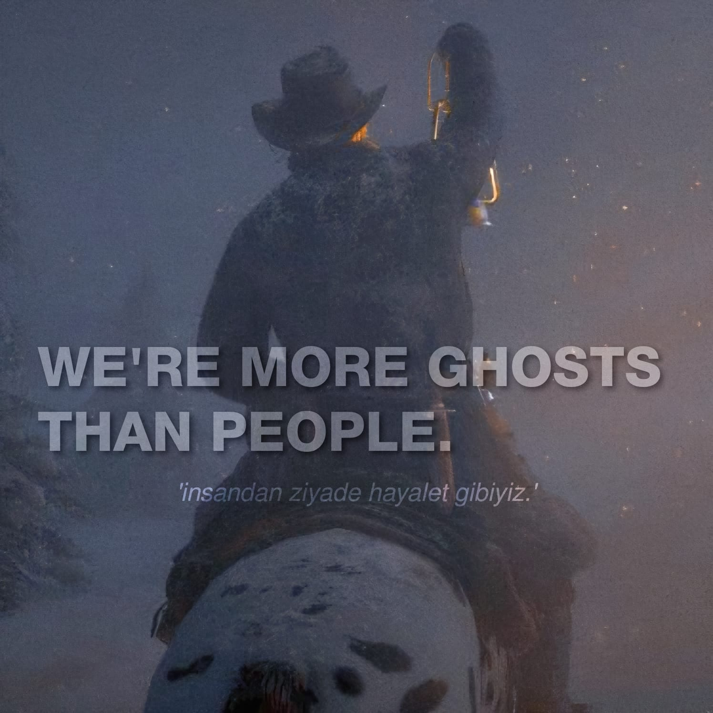
“By” Kuralı:
İlk cümlemiz, geçmiş zaman kuralıyla
kurulan bir cümledir.
“By”, cümlenin içeriğine göre anlamı değişir:
1. Zaman olarak: “kadar”
2. Vasıtasıyla, aracıyla
3. Edilgen cümlelerde özneyi belirten taraf.
Burada bir sene belirtilmesi,
“1899’a kadar” anlamını taşıyor.
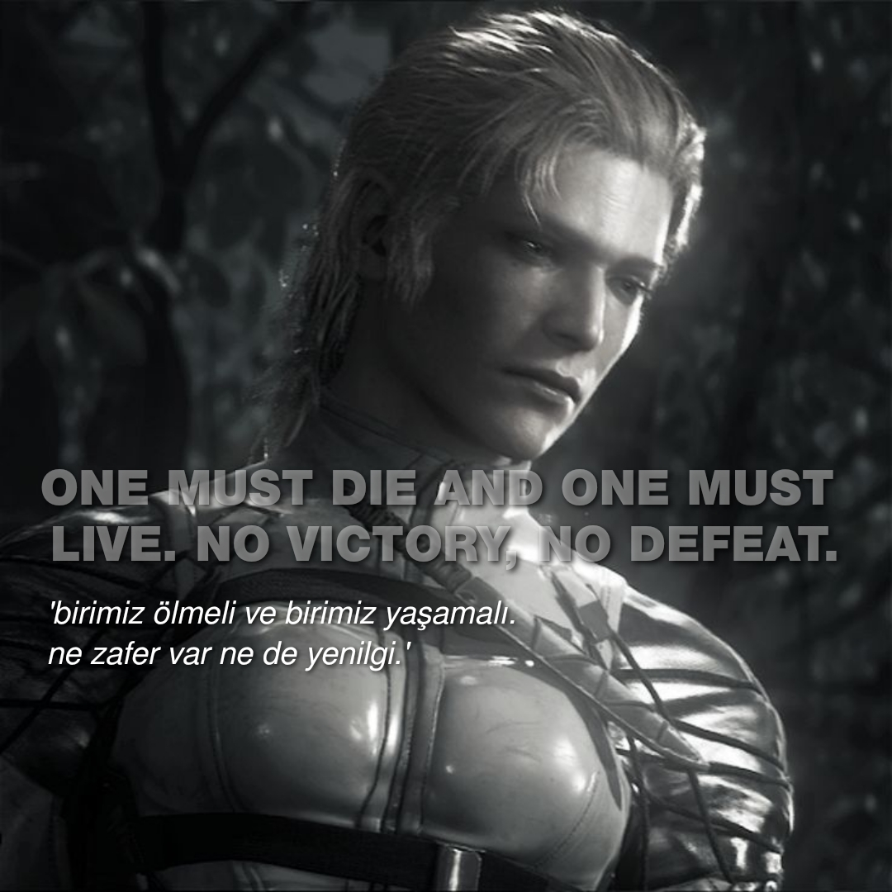
“[...] the age of outlaws and gunslingers was at an end.”
GEÇMİŞ ZAMAN HİKAYECİLİĞİ
“The” özel bir öznedir.
Geldiği ismi birden özelleştirir.
Örneğin, “The Boss” ve “Big Boss” arasındaki fark,
The
Boss’un zaten idealleriyle özel olmasıdır.
“Big Boss” ise The Boss’dan
daha büyük
olduğunu
nitelemek içindir ama evrenin kendisi, The Boss’un
fedakarlığı ve “dünyayı kurtaran kahraman”
olması üzerine ve Big Boss’un
“dünyayı satan adam” olarak The Boss’dan asla yüksek
olamayacağı anlamına gelir.
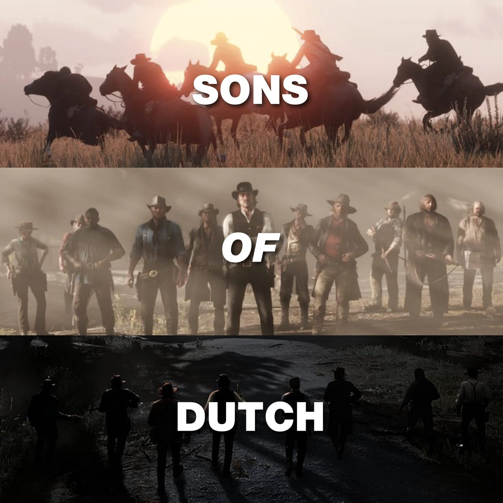
"of" Kuralı
Burada düşünmeniz gereken tek şey şu:
(tekil isim) + of + (çoğul isim)
Bunu “one of them/those/these” olarak kodlayabilirsiniz.
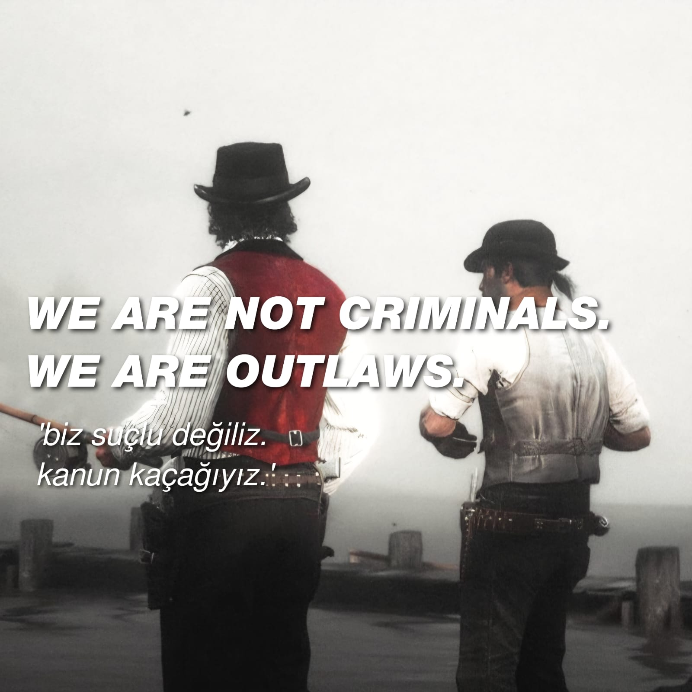
“out-law / gun-sling-er”
İngilizcede bir kelimeye önden veya sondan ek gelebilir.
“Outlaw” kelimesi, “out+law” kelimelerinden oluşturulmuştur.
“Out” dış, “law” ise kanun demektir.
“Outlaw” ise kanun dışı, kanun kaçağı anlamına gelir.
Aynı örneği “gunslinger” kelimesinde görebilirsiniz.
“Gun” kelimesi
ateşli silah, “sling” ise “sallamak” ve “sallanan” anlamlarını taşır.
Kelimelere gelen
“-er” ise bir kişiye işaret eder.
Aklınızda çoktan şu kelime oluştu bile:
silahşor.
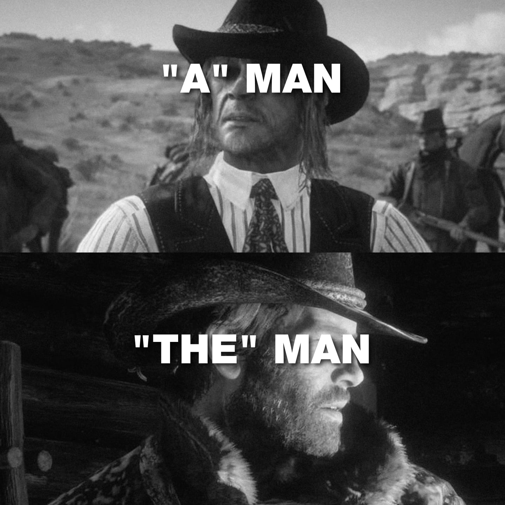
“[...] was at an end.”
“WAS/WERE KULLANIMI”
Bu kullanım elbette çok iyi bildiğiniz “past simple” kullanımıdır.
“age of outlaws and gunslingers” için “was” kullanıldı çünkü “of” ile bağlanan isimleri kapsayan bir “age” var. “Be” fiilinin özneye göre “am/is/are” olduğu mantık düzleminde geçmiş zaman çekimi “was/were” olacaktır.
“AT - PREPOSITION”
“At” kesin zaman dilimleri ve yer göstermek için kullanılan edattır. Burada da “1899” yılı gibi özel bir zaman dilimi veriliyor.
“[...]AN END”
...bir son. “A”, bildiğiniz bir kural olan “a/an/the” konusuna aittir. “The” nasıl ki gözünüze “belirli” olarak çarpıyorsa “a/an” de “bir” anlamında gözünüze çarpacak.
Colm O’Driscoll “a man” dir, Arthur Morgan ise “the man”.
“1899’a kadar kanun kaçaklarının ve silahşorlerin sonu geliyordu.”
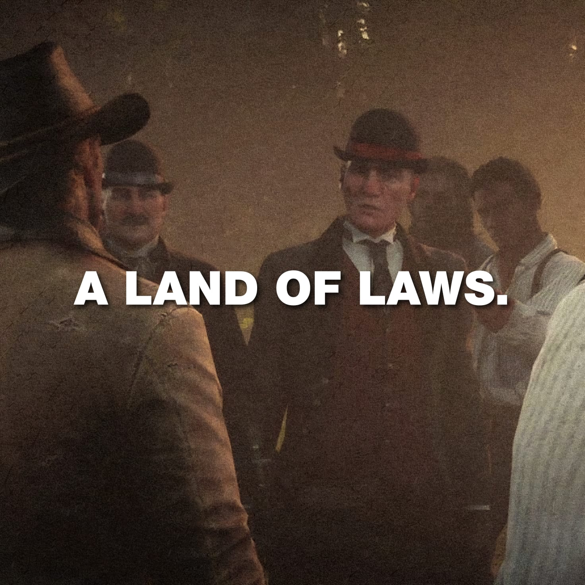
"America was becoming a land of laws..."
Past simple biliyor musun?
Evet.
“America”, senin öznen.
GOLDEN RULE (ALTIN KURAL):
Hikaye anlatımında geçmişte
devam edip bitmiş
olan
belli olaylar için “was/were + V(ing)” kullanılabilir.
“Become, love, hate, know” gibi
durum
içinde olan kelimeler için
devam etme anlamını taşıyan (continous) -ing eki
getirilmez.
“A LAND OF LAWS.”
Amerika, daha öncesinde “New England” olarak bir İngiliz kolonisiydi.
Bağımsızlığını
kazandıktan
sonra İngiltere’den kopmak için
Amerigo Vespucci’den gelen “America”yı oluşturdular.
Assassin’s Creed II’deki Ezio’nun kalbini fetheden o güzellik
Cristina Vespucci’den
aklına
gelsin. Kendisi Amerigo’nun kuzeniydi
ve Amerika’nın keşfine dolaylı yoldan etkisi var!
Amerigo’yu keşfe çıkması için Cristina ikna etmiş.
Bir “a” kullanımı daha.
Amerika, bir toprak oluyor ve “the”ya evriliyor.
Artık
keşfedilmiş
“a”
toprak değil.
“Amerika, kanunların diyarı oluyordu.”
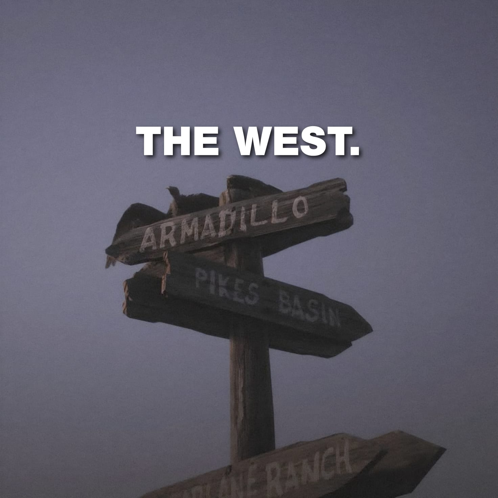
”[...]THE WEST[...]”
İşte bir kullanım daha.
“The west” yani belirli bir bölge.
Batı.
Bu bağlamdan ve “the” kullanımından
batının o kanun kaçakları yani
“outlaw” ve
silahşorlerle yani “gunslinger”
ile
dolu olan bölümünden bahsediyor.
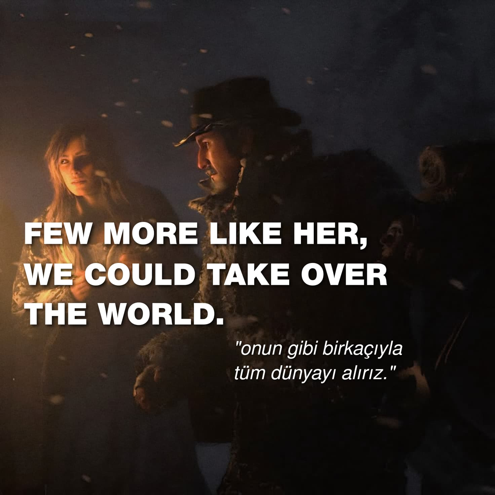
[...]HAD MOSTLY BEEN TAMED.
İşte bilmediğin (ya da karıştırdığın) o konu: Past Perfect Tense.
Bu sistemde o geçmiş, anlatılan geçmişin geçmişe ait olduğunu vurguluyor. Hayır, kafanın karışmasına hiç gerek yok. Şimdi sistem şu:
“Had + Fiilin geçmiş hali”
Kodumuz bu. Bir de “edilgen” dediğimiz, öznesinin belli olmayan yapısında sadece “been” gelecek. Edilgen yapıda:
“HAD + BEEN + FİİLİN GEÇMİŞ (ya da 3. hali dediğimiz edilgen) YAPISI.”
Burada bilmediğin “tame” kelimesi, “ehlileştirmek” anlamına geliyor. Tıpkı sevdiğin atı (ya da Colter yakınlarında o karlı bölgede bulmaya çalıştığın beyaz Arap atı) ehlileştirmek gibi.
Yani “Amerika, kanunlar diyarı olur” iken “Batının çoğunluğu bile ehlileştirilmişti.”
Burada “mostly” kafanı karıştırmasın. Zarf niteliğindeki “mostly”, “çoğunlukla” anlamını taşır.
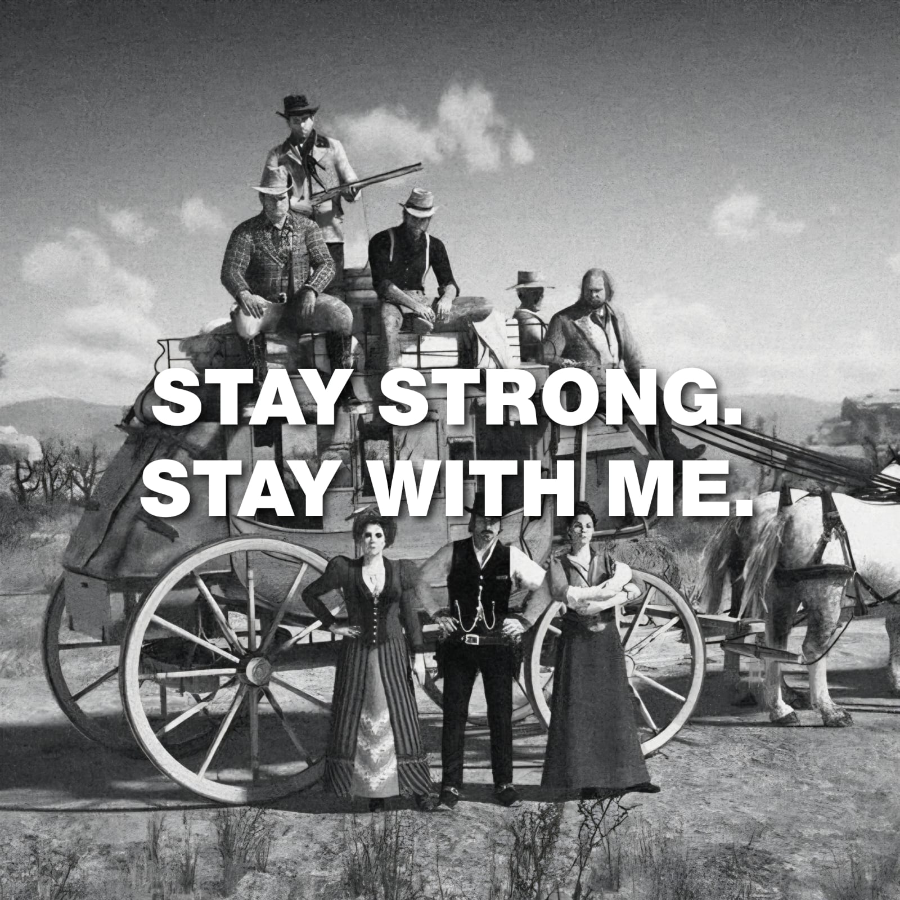
"A FEW GANGS..."
“A few”,
yani azalmış; sayıca az bir topluluk var.
“A few”
birkaç
demektir.
Bu çeteler Lemoyne Raiders, O’Driscoller, Night Folk ve
karizmatik
van der Linde
çetesiydi.
Bu grupları oluşturan kişileri sayabiliyoruz.
Hatta çete olarak sayabildiğimiz için
“birkaç
çete” olarak nitelendirebiliyoruz.
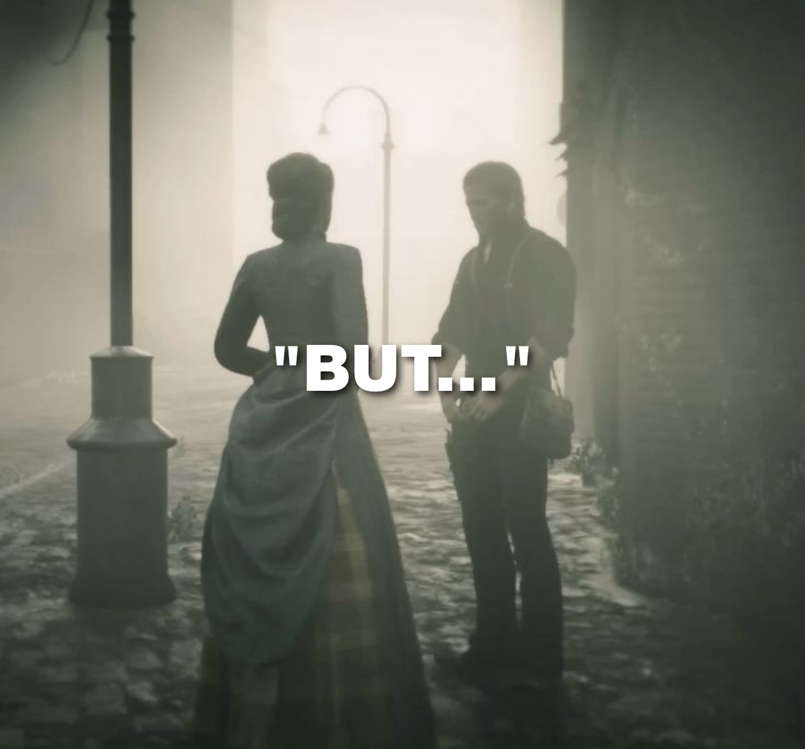
"[...]BUT...[...]"
İşte çok iyi bildiğin o kelime,
“ama, fakat, lakin.”
“Ama” diyorsan bir zıtlık arkasından gelecek.
Cümle iyi başladıysa kötü,
kötü başladıysa iyi.
Bunun yargıcı sensin: sen ve aklın.
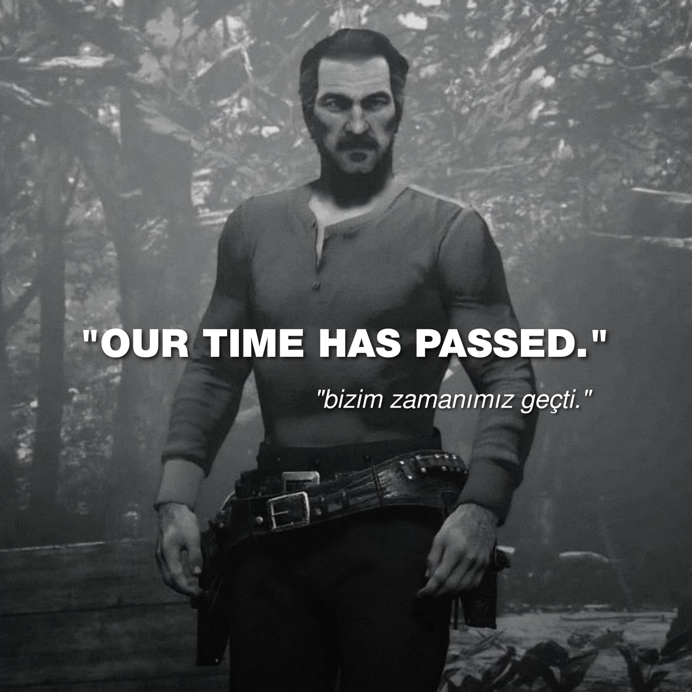
“[...]THEY WERE BEING HUNTED DOWN AND DESTROYED.”
“They” dediği özne, o çoğul topluluk “a few gangs.” Tekrar bildiğin gibi, “past simple” var ve edilgen olarak “geçmişte devam eden aksiyon” belirtiyor.
“WAS/WERE + BEING + FİİL (GEÇMİŞ HALİ)” senin yapındır.
“HUNTED DOWN & DESTROYED”
Düzenli olarak kabul edilen fiillere gelen “-(e)d” ekini gördün mü? İşte o “geçmiş zaman” atıfıdır.
“Hunt down” aslında çarpıcı bir kalıptır; yani bir “phrasal verb”, deyimdir. “Hunt” kelime olarak “avlamak” demektir. “Hunt down” ise... evet, bir yırtıcının avlamasına benzetilebilir.
“Destroy” ise “yok etmek” anlamına geliyor. O “birkaç çete hala dolansa da avlanıyor ve yok ediliyor.”